“Machine learning sucks.” Yann LeCun은 도발적인 한 문장으로 강연을 시작한다. 지금의 AI가 눈부신 결과를 내고 있다는 사실을 부정하려는 말이 아니다. 오히려 그 성공이 가리고 있는 더 근본적인 문제—기계가 인간이나 동물만큼 효율적으로 세계를 학습하지 못한다는 사실—를 정면으로 지적하는 선언이다.
초록
이 보고서는 Yann LeCun의 강연 World Models: Enabling the next AI revolution을 바탕으로, 세계 모델과 JEPA(Joint Embedding Predictive Architecture)가 차세대 자율지능의 핵심으로 제안되는 논리를 정리한다. 강연의 중심 주장은 세 가지다. 첫째, 텍스트 기반 피드포워드 모델은 현실의 풍부한 구조와 불확실성을 충분히 학습하지 못한다. 둘째, 지능적인 행동에는 행동 결과를 예측하는 세계 모델과 목표를 만족시키는 행동을 탐색하는 최적화 과정이 필요하다. 셋째, 미래를 픽셀 단위로 생성하기보다 불필요한 세부사항을 제거한 표현 공간에서 예측해야 한다.
I-JEPA, DINOv3, V-JEPA 2 및 행동 조건부 세계 모델은 이 구상이 단순한 이론을 넘어 이미지 이해, 비디오 상식, 깊이 추정, 시맨틱 분할, 로봇의 zero-shot 목표 도달로 이어지고 있음을 보여준다. 다만 “최고 성능의 표현 학습”과 “일반적인 자율지능” 사이에는 장기 기억, 계층적 계획, 안전 제약, 인과적 일반화라는 큰 연구 간극이 남아 있다.
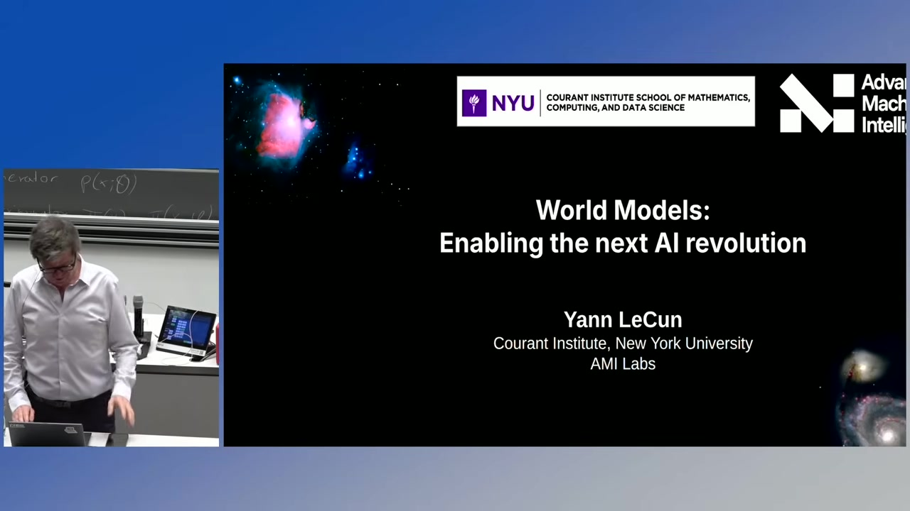
핵심 발견 6가지
데이터의 양보다 경험의 구조가 중요하다
4세 아이가 처리한 감각 정보량은 초대형 언어모델의 텍스트 훈련량과 맞먹거나 이를 넘어선다. 차이는 현실과 상호작용하며 물리적 규칙을 배운다는 데 있다.
계획은 단순한 다음 토큰 예측이 아니다
반응형 정책은 익숙한 상황에 빠르지만, 새로운 목표와 제약을 다루려면 가능한 미래를 예측하고 행동 시퀀스를 탐색하는 최적화가 필요하다.
좋은 예측은 모든 픽셀을 맞히지 않는다
미래의 불확실한 세부사항까지 생성하려 하면 평균화와 흐림이 발생한다. JEPA는 의미 있는 추상 표현만 예측해 이 문제를 우회한다.
표현 붕괴가 자기지도학습의 중심 난제다
모든 입력을 같은 벡터로 보내면 예측 손실은 쉽게 줄지만 표현은 무의미해진다. 증류와 정보 최대화는 이 ‘게으른 해’를 막는 두 핵심 전략이다.
이미지·비디오 모델에서 실증이 축적되고 있다
DINOv3와 V-JEPA 계열은 분류를 넘어 깊이, 추적, 분할, 직관적 물리 이해에서 강한 전이 성능을 보이며 범용 표현의 가능성을 뒷받침한다.
최종 목표는 계층적 인과 모델이다
물체와 장면에서 세포·신체·사회·생태계까지 서로 다른 시간·공간 규모를 연결하는 계층적 JEPA가 장기 비전으로 제안된다.

진정한 지능의 질문은 “무엇을 말할 것인가”보다 “이 행동을 하면 세계가 어떻게 달라질 것인가”에 가깝다.
왜 지금의 AI는 충분히 배우지 못하는가
LeCun의 비판은 LLM이 무용하다는 주장이 아니다. 언어모델이 보여준 압축과 생성 능력에도 불구하고, 그것만으로는 인간이 매우 적은 시행착오를 통해 획득하는 상식·물리 직관·행동 계획을 설명하기 어렵다는 것이다.
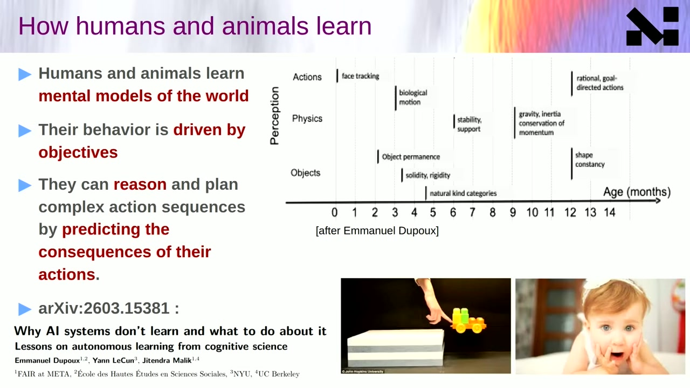
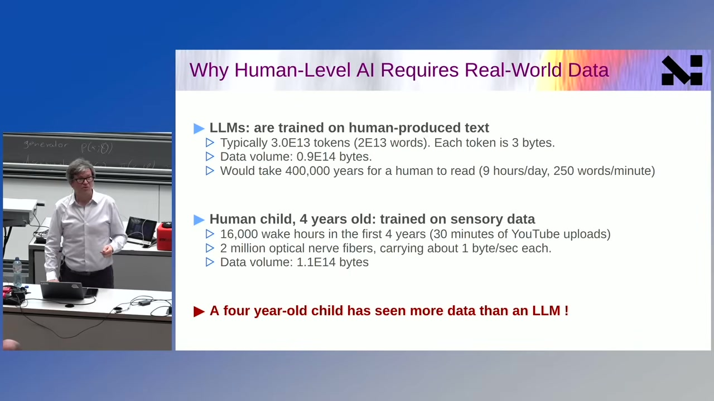
byte 수는 학습 가치나 정보량과 동일하지 않다. 감각 신호에는 강한 시간적 중복이 있고, 토큰 역시 고정된 정보 단위가 아니다. 이 비교의 의미는 “아이가 정확히 몇 배 더 많은 정보를 얻는다”가 아니라, 지능 연구가 언어 데이터만으로는 놓치는 거대한 실세계 신호를 다시 보아야 한다는 데 있다.
LLM은 도서관의 모든 책을 읽은 학생에 가깝다. 아이는 공을 떨어뜨리고, 컵을 넘어뜨리고, 물체가 가려져도 사라지지 않는다는 사실을 몸으로 확인한다. 둘 다 데이터를 보지만, 두 번째 경험에는 시간·공간·원인과 결과가 함께 들어 있다.
반응하는 시스템에서 계획하는 시스템으로
강연은 에이전틱 AI를 두 경로로 구분한다. 첫 번째는 현재 상태에서 곧바로 행동을 출력하는 System 1 방식이다. 빠르고 학습하기 쉽지만, 새로운 목표나 복잡한 제약을 만났을 때 내부에서 대안을 비교하지 않는다. 두 번째는 세계 모델을 이용해 행동 결과를 예측하고, 목표를 가장 잘 만족하는 행동 시퀀스를 찾는 System 2 방식이다.
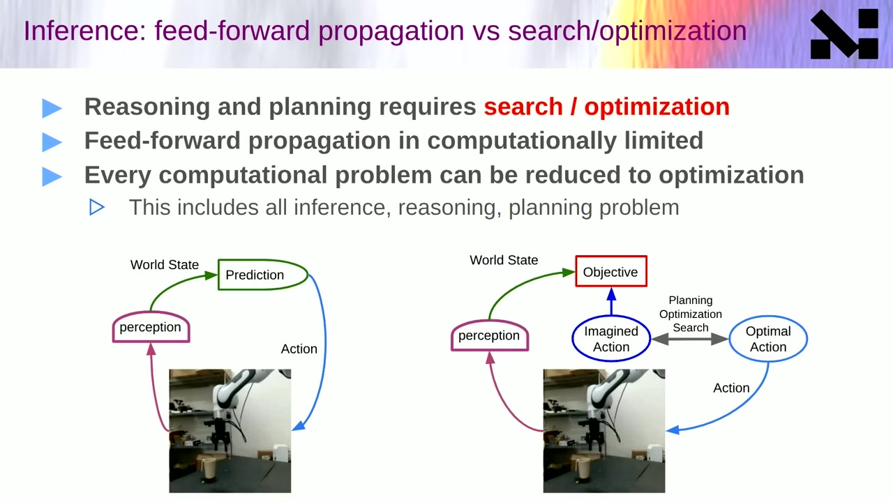
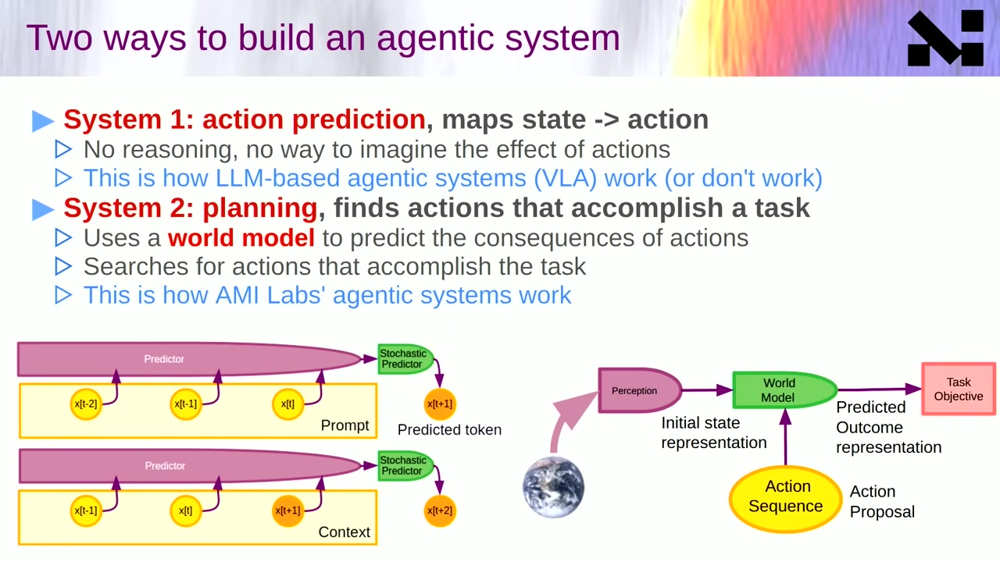
| 구분 | System 1 · 반응형 | System 2 · 계획형 |
|---|---|---|
| 핵심 연산 | 현재 관측에서 행동으로 직접 매핑 | 행동 결과 예측 후 목표 함수 최적화 |
| 장점 | 빠른 실행, 단순한 추론 경로, 익숙한 패턴에 강함 | 새로운 목표, 긴 행동 시퀀스, 제약 조건을 명시적으로 다룸 |
| 약점 | 분포 밖 상황과 장기 계획에 취약 | 정확한 세계 모델과 효율적인 탐색이 필요 |
| 대표적 접근 | LLM 기반 정책, VLA의 직접 행동 생성 | World Model + MPC·서치·에너지 최소화 |
여기서 “추론에는 최적화가 필요하다”는 주장은 생성 모델 내부의 모든 계산이 무의미하다는 뜻이 아니다. 핵심은 행동하기 전 여러 가능한 미래를 명시적으로 평가할 수 있어야 한다는 것이다. 체스 선수가 후보 수를 상상하고 비교하듯, 에이전트도 세계 모델 안에서 가상의 시행착오를 수행해야 한다.
LeCun이 그리는 완전한 인지 아키텍처
장기 비전은 단일 거대 신경망보다 여러 기능이 목표를 중심으로 협력하는 모듈형 구조에 가깝다. 지각은 현재 상태를 추정하고, 세계 모델은 가능한 미래를 예측하며, 행위자는 목표와 안전 제약을 만족하는 행동을 선택한다. 기억과 구성자는 과제에 맞는 정보와 모듈을 활성화한다.
지각
기억
세계 모델
과제 목표
안전 제약
행위자
행동
Configurator는 과제와 상황에 따라 각 모듈의 동작을 조정한다.
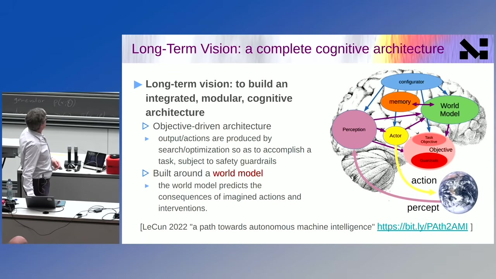
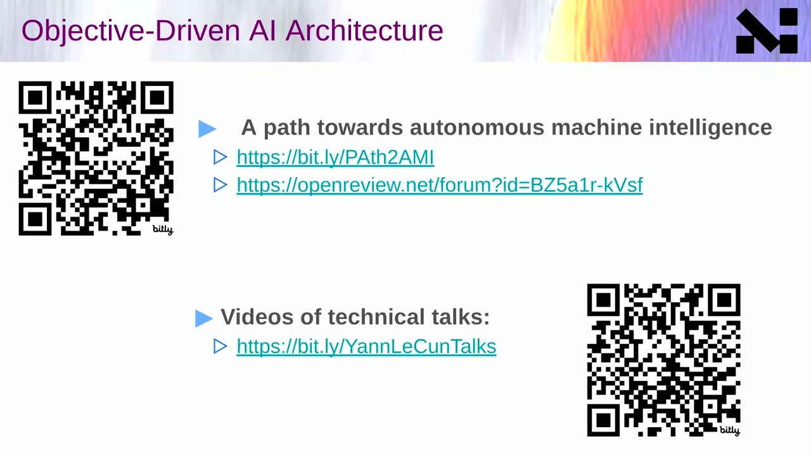
이 설계에서 안전은 출력 뒤에 붙이는 필터가 아니라, 행위자가 최소화해야 할 목표 함수의 일부다. LeCun은 이를 통해 가드레일을 우회하기 어렵게 만들 수 있다고 주장한다. 다만 실제 시스템에서는 목표 명세 오류, 세계 모델의 오판, 센서 실패가 여전히 존재하므로 구조 자체가 절대적인 안전을 보장한다고 보기는 어렵다.
세계 모델은 현실을 복제하는 카메라가 아니라, 행동에 필요한 것을 남기는 압축된 시뮬레이터다.
JEPA: 픽셀이 아니라 의미를 예측한다
미래 프레임을 픽셀 단위로 예측하는 모델은 수많은 가능한 미래를 모두 다뤄야 한다. 사람이 걸어갈 방향, 나뭇잎의 움직임, 그림자의 미세한 변화처럼 과제와 무관한 세부사항까지 정확히 생성하려 하면, 평균 제곱 오차 기반 모델은 서로 다른 가능성을 평균내어 흐릿한 이미지를 만든다.
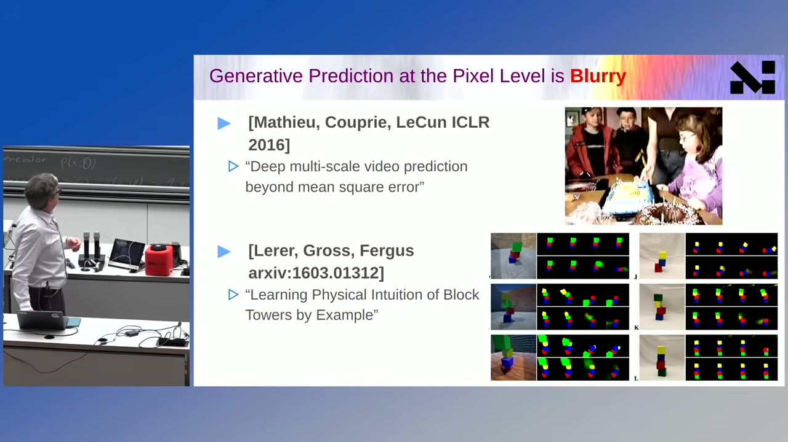
사진 전체를 외우는 대신 “고양이가 창가에 앉아 있다”는 핵심을 기억한다고 생각하면 된다. 다음 순간 털 한 올이 어디로 움직일지는 몰라도, 고양이가 여전히 창가 근처에 있을 것이라는 의미 수준의 예측은 할 수 있다.
공동 임베딩 예측의 기본 구조
JEPA는 입력 x와 목표 y를 각각 표현으로 인코딩한다. 예측기는 x의 표현과 필요한 경우 잠재변수 또는 행동을 받아 y의 표현을 예측한다. 학습은 실제 목표 표현과 예측 표현의 거리를 줄이는 방향으로 진행된다.
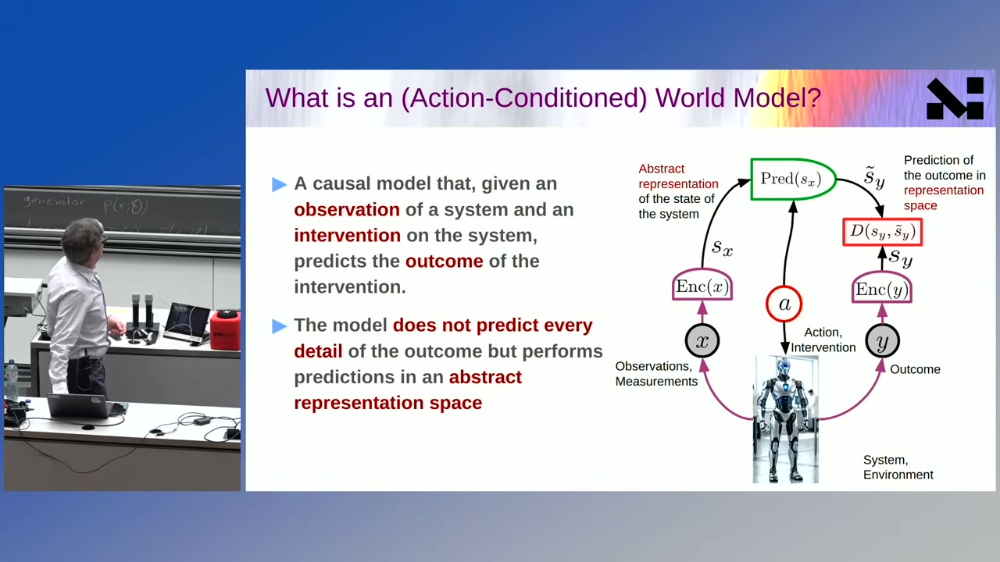
가장 쉬운 답이 가장 쓸모없는 답일 때
공동 임베딩 학습에는 치명적인 지름길이 있다. 인코더가 모든 입력을 똑같은 표현으로 보내면 예측기는 언제나 정답을 맞힐 수 있다. 손실은 낮지만 아무 정보도 남지 않는다. 이를 표현 붕괴라고 부른다.
세상의 모든 질문에 “42”라고 답하는 학생과 같다. 답은 항상 일관되므로 자기 답안끼리 비교하면 틀리지 않지만, 현실을 구분하거나 설명하는 능력은 전혀 없다.
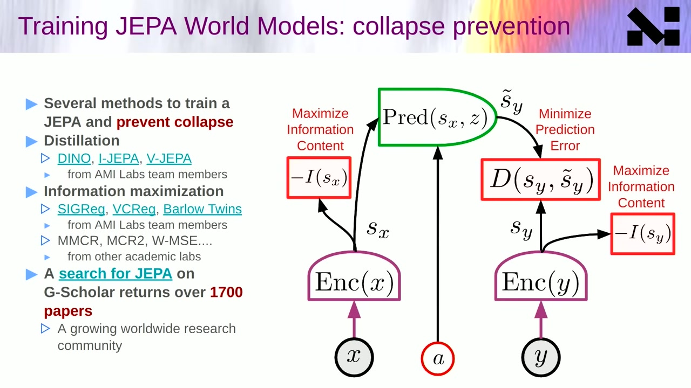
| 전략 | 핵심 아이디어 | 대표 방법 | 주요 부담 |
|---|---|---|---|
| 증류 | 변형된 입력을 보는 학생이 안정적인 교사 표현을 예측 | DINO, I-JEPA, V-JEPA | 교사 업데이트 규칙과 데이터 증강 설계 |
| 정보 최대화 | 샘플 다양성과 변수 독립성을 직접 정규화 | SIGReg, VCReg, Barlow Twins, MMCR | 유한 표본에서 정보량을 안정적으로 측정하는 문제 |
| 대조 학습 | 실제 샘플의 에너지는 낮추고 대조 샘플의 에너지는 높임 | 다양한 contrastive EBM | 고차원에서 필요한 대조 샘플 수와 계산량 |
에너지 지형으로 보는 붕괴
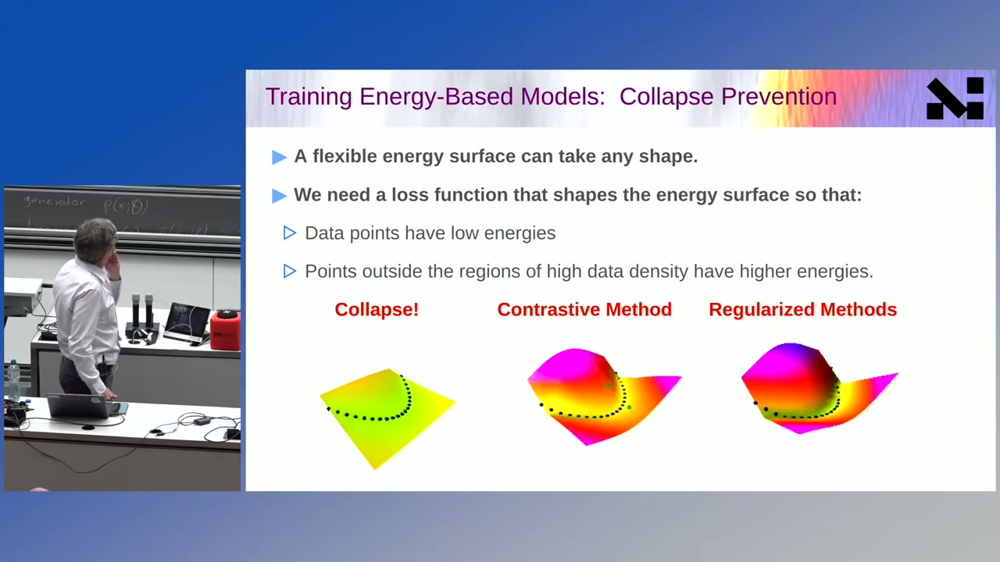
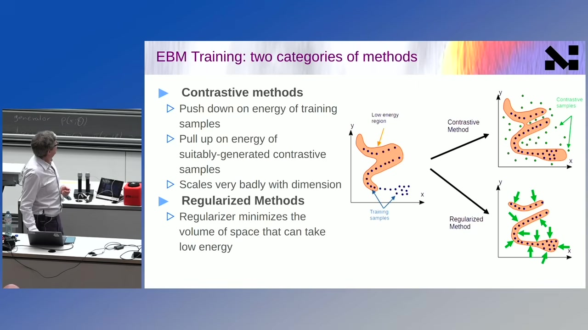
에너지 기반 모델의 언어로 보면 학습 데이터와 잘 맞는 구성에는 낮은 에너지를, 그렇지 않은 구성에는 높은 에너지를 부여해야 한다. 모든 곳의 에너지가 같아지면 모델은 아무것도 구분하지 않는다. 대조 학습은 잘못된 사례를 직접 밀어내지만, 고차원 공간을 충분히 덮는 음성 샘플을 만들기 어렵다. 정규화 접근은 낮은 에너지 영역의 부피를 제한해 이 문제를 우회한다.
LeJEPA와 SIGReg: 표현에 정보를 남기는 법
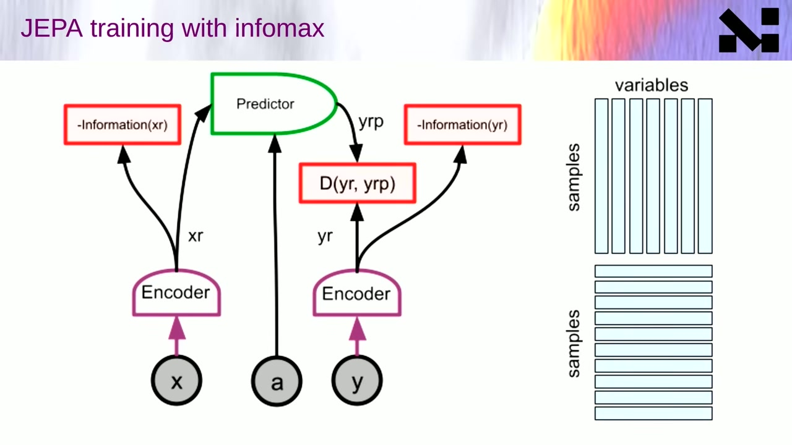
실제 난점은 인코더가 만든 유한한 표본만으로 고차원 표현의 정보량을 측정해야 한다는 것이다. LeJEPA의 SIGReg(Sketched Isotropic Gaussian Regularization)는 여러 임의 방향으로 표현을 투영하고, 각 1차원 분포를 가우시안에 가깝게 만든다. 충분히 많은 방향에서 정규화를 적용하면 결합 분포가 등방성 가우시안으로 수렴한다는 아이디어다.
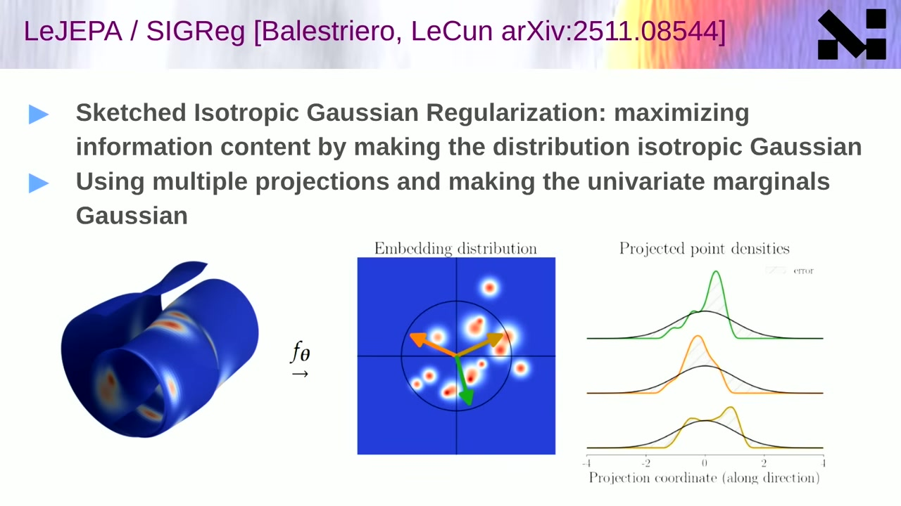
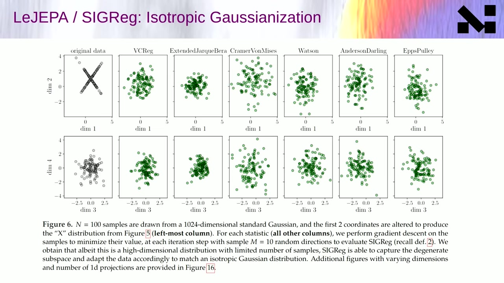
아이디어에서 시스템으로: DINO와 V-JEPA
세계 모델의 비전은 아직 완성되지 않았지만, 그 기반이 되는 자기지도 표현 학습은 이미 여러 벤치마크와 로봇 실험에서 구체적인 성과를 내고 있다. 중요한 변화는 단순 이미지 분류 정확도를 넘어, 깊이·추적·분할·물리적 상식·행동 계획까지 하나의 표현을 재사용한다는 점이다.
1. 이미지에서 의미를 학습하는 JEPA
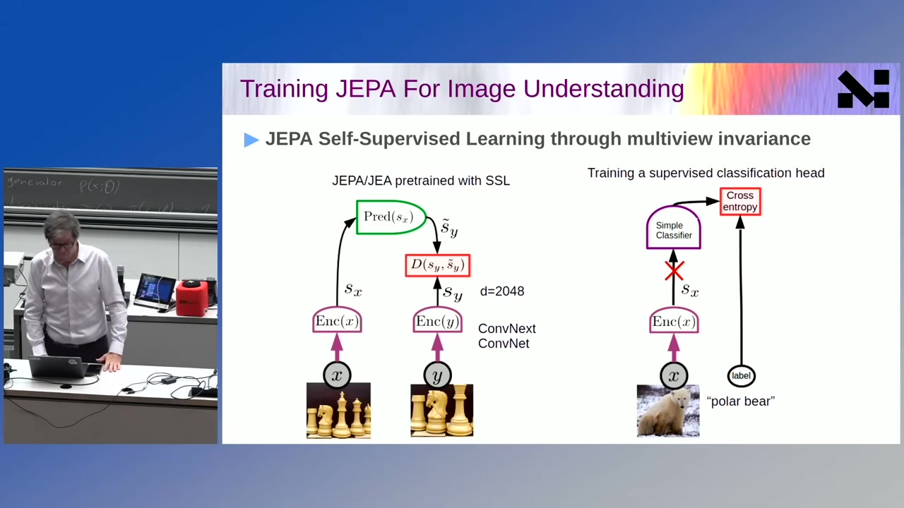
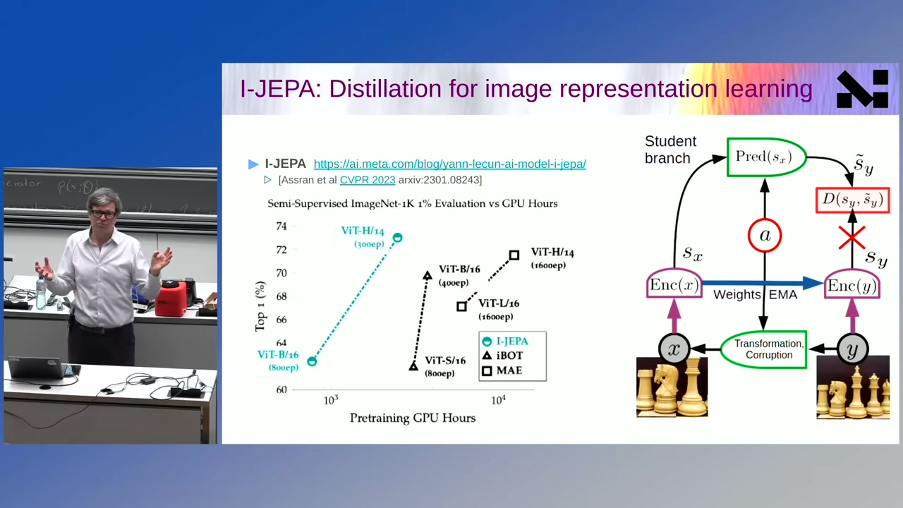
I-JEPA에서 학생 브랜치는 일부가 가려지거나 변형된 이미지를 보고, 교사 브랜치는 더 완전한 문맥에서 목표 표현을 제공한다. 교사 가중치는 학생의 지수이동평균(EMA)으로 업데이트되어 학습 목표를 천천히 움직이게 한다. 픽셀을 복원할 필요가 없기 때문에 모델은 형태, 배치, 물체 관계처럼 안정적인 의미에 집중할 수 있다.
2. DINOv3: 범용 이미지 표현의 확장
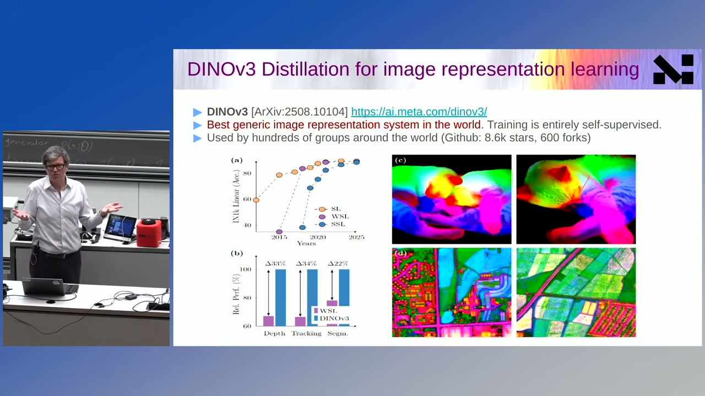
3. 표현을 행동 계획에 연결하기
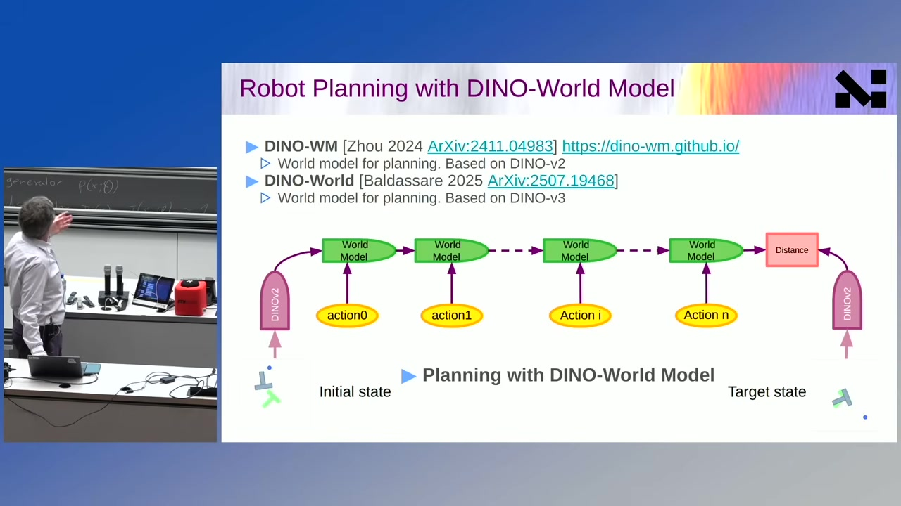
DINO 기반 세계 모델은 초기 장면과 목표 장면을 표현 공간에 놓고, 여러 행동 시퀀스가 목표에 얼마나 가까운 미래 표현을 만드는지 비교한다. MPC(Model Predictive Control)는 짧은 미래를 반복적으로 최적화해 첫 행동을 실행하고, 새 관측이 들어오면 다시 계획한다. 이 방식은 완벽한 장기 예측보다 지속적인 관측과 재계획을 활용한다.
4. V-JEPA 2: 비디오에서 상식과 역학을 학습하다
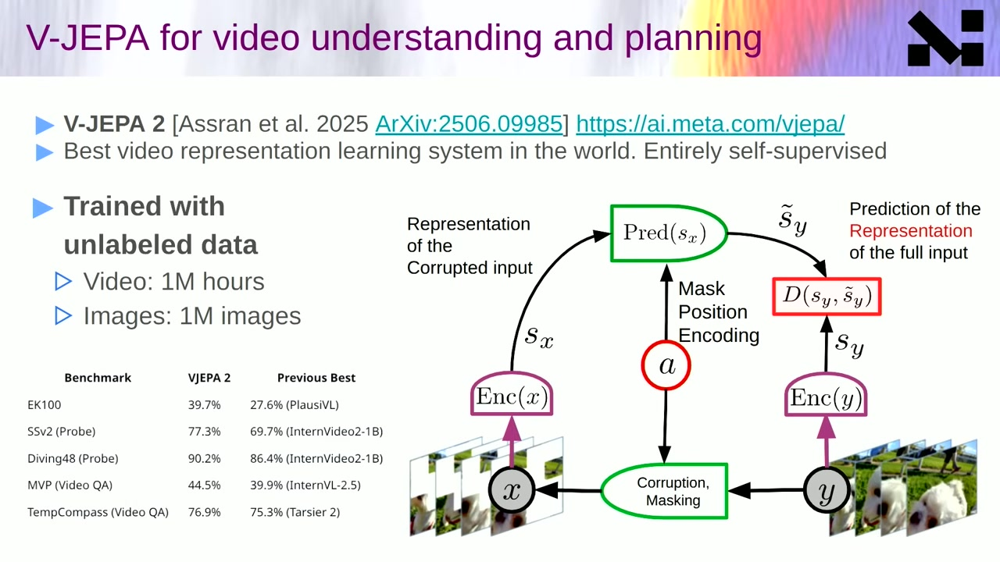
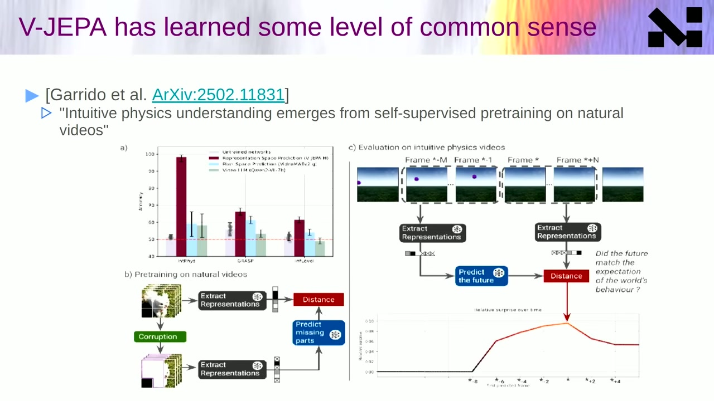
직관적 물리 평가에서는 과거 프레임을 보고 미래 표현을 예측한 뒤, 실제 관측이 모델의 기대에서 얼마나 벗어나는지 측정한다. 물체가 갑자기 사라지거나 불가능한 경로로 이동하면 예측 오차가 커진다. 이는 언어로 규칙을 설명하지 않아도 자연 비디오의 시간 구조에서 일부 물리적 규칙을 획득할 수 있음을 시사한다.
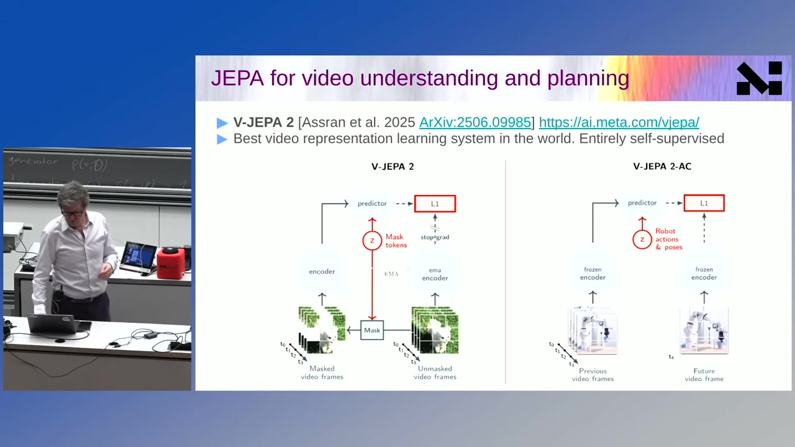
5. V-JEPA 2.1: 표현의 정밀도를 공간 이해로 검증하다
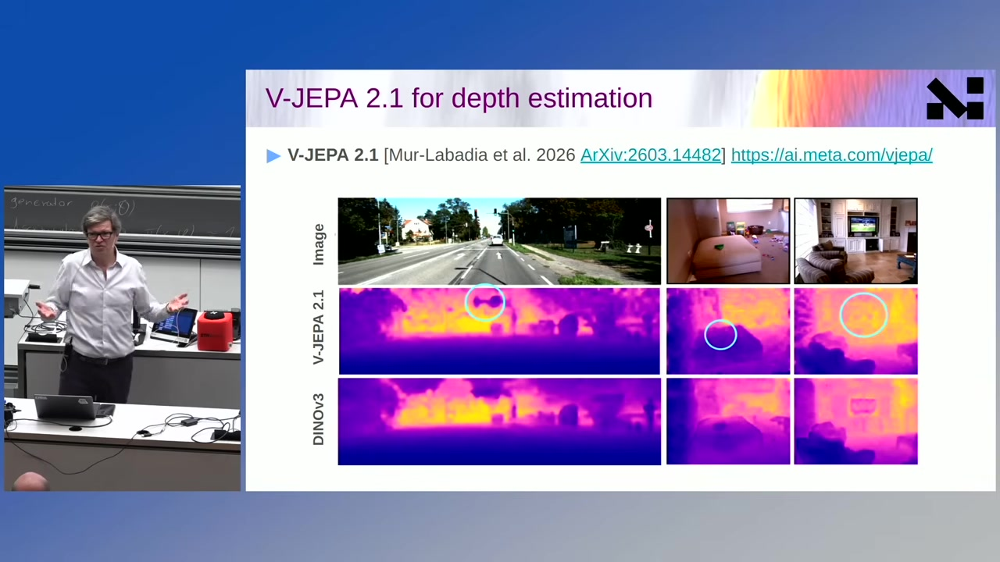
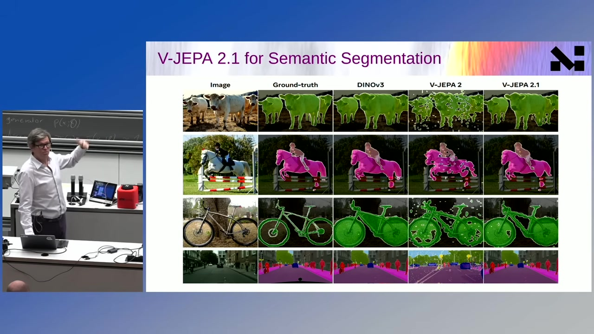
증거를 어떻게 읽어야 하는가
- 표현 전이는 분명한 진전이다. 하나의 자기지도 표현이 분류, 깊이, 추적, 분할과 비디오 이해에 재사용된다는 점은 범용성에 대한 강한 근거다.
- 직관적 물리 평가는 세계 모델의 초기 증거다. 그러나 제한된 벤치마크에서 이상 장면을 감지하는 능력과 열린 현실에서 장기 계획하는 능력은 동일하지 않다.
- 로봇 MPC는 행동 조건부 예측의 실용성을 보여준다. 동시에 짧은 계획 지평, 제한된 행동 공간, 반복 재계획에 의존할 수 있다는 조건을 함께 보아야 한다.
- “최고”라는 표현은 평가 범위에 종속된다. 모델 크기, 데이터, 계산량, 평가 프로토콜이 다르므로 특정 벤치마크 우위를 일반지능의 우위로 확대 해석해서는 안 된다.
| 시스템 | 학습 신호 | 주요 대상 | 세계 모델 비전과의 연결 |
|---|---|---|---|
| I-JEPA | 마스킹 문맥에서 목표 표현 예측 | 정적 이미지 | 픽셀 복원 없는 의미 표현 학습 |
| DINOv3 | 자기증류 기반 자기지도학습 | 이미지·밀집 예측 | 재사용 가능한 시각 상태 표현 |
| DINO-WM / DINO-World | 행동에 따른 표현 변화 | 로봇 목표 도달 | MPC가 탐색할 수 있는 잠재 동역학 |
| V-JEPA 2 | 마스킹된 시공간 표현 예측 | 비디오 이해·물리 상식 | 시간적 변화와 기대 위반 학습 |
| V-JEPA 2-AC | 행동·자세 조건부 미래 표현 | 로봇 상호작용 | 개입 결과를 예측하는 인과 모델 |
| V-JEPA 2.1 | 확장된 비디오 표현 학습 | 깊이·시맨틱 분할 | 정밀한 공간 구조 표현 검증 |
다음 질문: 세계를 몇 단계로 이해해야 하는가
강연의 마지막은 하나의 모델이 모든 세부사항을 같은 해상도와 시간 척도에서 처리하는 방식에서 벗어난다. 원자는 분자 수준의 법칙으로, 분자는 물질의 성질로, 물질은 물체와 시스템의 거동으로 이어진다. 생명 영역에서도 단백질, 세포소기관, 세포, 장기, 개체, 사회, 생태계가 서로 다른 추상화 층을 이룬다.
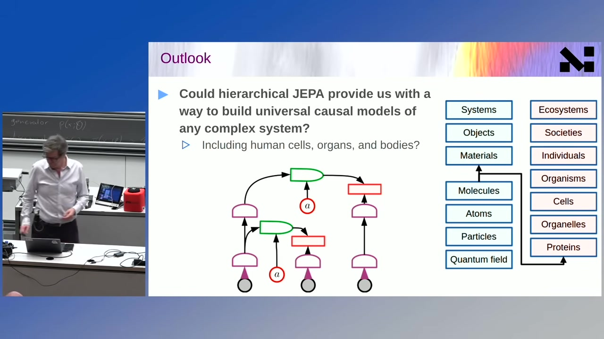
계층적 모델의 핵심은 아래 단계의 모든 정보를 상위 단계로 복사하지 않는 것이다. 상위 표현은 더 긴 시간 범위와 더 큰 공간 규모에서 안정적인 변수만 남긴다. 자동차를 운전할 때 타이어 고무의 분자 운동까지 예측할 필요는 없지만, 노면 마찰과 차량의 움직임은 알아야 하는 것과 같다.
이 연구 방향이 바꾸는 것
AI 제품의 중심이 대화에서 행동으로 이동한다
실세계 에이전트는 답변 품질뿐 아니라 상태 추정, 결과 예측, 재계획, 안전 제약을 하나의 실행 루프로 묶어야 한다.
비레이블 비디오가 핵심 학습 자원이 된다
영상은 물체, 운동, 지속성, 상호작용에 관한 구조를 포함한다. 텍스트가 설명하지 않는 현실의 규칙을 학습할 수 있는 원천이다.
평가 기준이 생성 품질에서 계획 성공률로 확장된다
좋은 세계 모델은 보기 좋은 프레임보다 목표 달성에 필요한 구분을 보존해야 한다. 장기적 성공, 재계획 효율, 제약 준수가 중요해진다.
연구자와 개발자를 위한 실무적 질문
- 현재 모델은 과제와 무관한 세부사항까지 생성하느라 계산을 낭비하고 있지 않은가?
- 표현이 샘플을 충분히 구분하며, 변수 간 중복을 줄이고 있는가?
- 정적 데이터 성능 외에 시간적 일관성과 행동 결과 예측을 평가하고 있는가?
- 정책이 실패했을 때 세계 모델의 오류와 계획기의 오류를 분리해 진단할 수 있는가?
- 안전 제약이 사후 필터가 아니라 행동 선택의 목적함수와 검증 과정에 포함되어 있는가?
- 짧은 지평의 MPC 성과가 장기적·계층적 계획으로 확장될 근거가 있는가?
표현 공간에서 무엇을 버리고 무엇을 보존할지 자동으로 결정하는 문제다. 너무 많은 세부사항을 남기면 예측이 어려워지고, 너무 많이 버리면 계획에 필요한 정보가 사라진다. 좋은 추상화의 기준은 결국 “어떤 목표를 위해 어떤 행동을 선택해야 하는가”와 연결된다.
58분 강연 타임라인
오프닝. “Machine learning sucks” — 현재 학습 방식의 한계 선언.
학습. 인간과 동물의 정신 모델, 목표 구동 행동, 결과 예측.
발달. 아동의 위반 기대 실험과 물리 개념 획득.
상식. 물리적 직관과 공통 상식 평가.
데이터. LLM과 아이의 경험량 비교, 비디오의 중요성.
구조. 세계 모델 기반 모듈형 인지 아키텍처.
안전. 목표 함수에 포함되는 Safety Guardrails.
계층. 세계 모델을 어떻게 구성하고 훈련할 것인가.
표현. 픽셀이 아닌 추상 공간에서 미래 예측.
JEPA. Joint Embedding Architecture의 필요성.
확산. JEPA 연구 커뮤니티와 관련 연구 증가.
EBM. 에너지 지형과 표현 붕괴의 직관.
다양성. 샘플 다양성과 표현 변수 독립성.
추상화. 상위 개념이 새로운 정보를 만드는 방식.
행동. Action-Conditioned World Model의 정의.
SIGReg. 투영과 등방성 가우시안 정규화.
I-JEPA. 이미지 표현의 자기증류 학습.
DINO. DINOv3와 로봇 세계 모델·MPC.
V-JEPA 2. 비디오 표현과 행동 조건부 버전.
물리 상식. 자연 동영상 사전학습에서 나타난 직관.
V-JEPA 2.1. 깊이 추정과 시맨틱 분할.
전망. 모든 복잡계를 향한 계층적 인과 모델.
Q&A. MPC에서 표현 공간 제약을 처리하는 방법.
원본 강연은 YouTube에서 시청할 수 있다. 이 문서는 보안상 영상 플레이어를 삽입하지 않고 정적 링크만 제공한다.
독자가 기억해야 할 다섯 문장
- 언어를 많이 읽는 것과 세계를 이해하는 것은 같은 문제가 아니다.
- 계획 가능한 AI에는 행동 결과를 상상하는 세계 모델이 필요하다.
- JEPA는 불확실한 픽셀 대신 행동에 필요한 의미를 예측한다.
- 표현 붕괴를 막는 증류와 정보 최대화가 자기지도학습의 핵심 기술이다.
- DINO와 V-JEPA의 성과는 중요한 기반이지만, 장기적 자율지능은 아직 열린 연구 문제다.
출처 및 연구 노트
- Yann LeCun, “World Models: Enabling the next AI revolution.” Computer Vision and Geometry Group, ETH Zurich, 2026-06-09. 강연 영상
- Yann LeCun, “A Path Towards Autonomous Machine Intelligence.” OpenReview, 2022. 자료 보기
- Emmanuel Dupoux, Yann LeCun, Jitendra Malik, “Why AI systems don't learn and what to do about it.” arXiv:2603.15381. arXiv
- Michaël Mathieu, Camille Couprie, Yann LeCun, “Deep Multi-Scale Video Prediction Beyond Mean Square Error.” ICLR, 2016.
- Adam Lerer, Sam Gross, Rob Fergus, “Learning Physical Intuition of Block Towers by Example.” arXiv:1603.01312. arXiv
- Mahmoud Assran et al., “Self-Supervised Learning from Images with a Joint-Embedding Predictive Architecture.” CVPR 2023, arXiv:2301.08243. arXiv
- DINOv3. arXiv:2508.10104. 프로젝트 페이지
- DINO-WM. arXiv:2411.04983. 프로젝트 페이지
- DINO-World. arXiv:2507.19468. arXiv
- Mahmoud Assran et al., “V-JEPA 2.” arXiv:2506.09985. 프로젝트 페이지
- Mur-Labadia et al., “V-JEPA 2.1.” arXiv:2603.14482. arXiv
- Randall Balestriero, Yann LeCun, “LeJEPA / SIGReg.” arXiv:2511.08544. arXiv
- Garrido et al., “Intuitive Physics Understanding Emerges from Self-Supervised Pretraining on Natural Videos.” arXiv:2502.11831. arXiv
- Yann LeCun Technical Talks. 강연 모음
이 글은 제공된 강연 노트와 화면 캡처를 바탕으로 편집·재구성한 연구 해설이다. 성능 수치와 “최고” 등의 비교 표현은 강연 슬라이드가 제시한 평가 조건에 따른다. 논문의 세부 실험 설정, 통계적 유의성, 후속 수정 여부는 각 원문을 통해 별도로 확인해야 한다.
생성의 시대 다음에는 예측과 계획의 시대가 올까
세계 모델은 LLM을 폐기하는 선언이라기보다 지능의 빈칸을 채우려는 연구 프로그램이다. 언어모델은 지식과 의도를 표현하는 강력한 인터페이스가 될 수 있다. 그러나 현실에서 행동하려면 지각한 세계가 어떻게 변하는지, 선택한 행동이 어떤 결과를 낳는지, 실패했을 때 어떻게 다시 계획할지를 다루는 별도의 구조가 필요하다.
JEPA는 그 구조를 만들기 위한 한 가지 답이다. 모든 것을 생성하지 않고, 중요한 것을 표현하며, 표현 속에서 미래를 예측한다. DINO와 V-JEPA가 보여주는 성과는 이 방향이 유망하다는 증거다. 동시에 열린 환경에서 장기 목표를 달성하고, 계층적 인과관계를 학습하며, 안전 제약을 지속적으로 지키는 시스템까지는 아직 갈 길이 멀다.
다음 AI 혁명의 기준은 얼마나 그럴듯하게 말하는가가 아니라, 얼마나 정확하게 세계를 상상하고 책임 있게 행동하는가가 될지도 모른다.